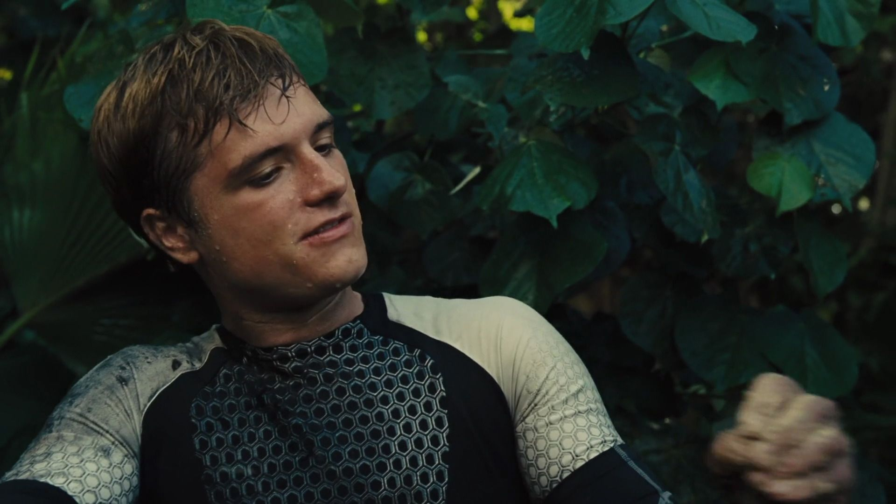

The characteristics and information of some of the characters from "The Hunger Games". In "The Hunger Games" as a punishment for a past rebellion, one boy and one girl between the ages of 12 and 18 from each district are selected by lottery (the "Reaping") to participate in the annual Hunger Games. The participants (or "tributes") must fight to the death in an arena; the sole survivor is rewarded with fame and wealth.
| Character | Information | Characteristics |
|---|---|---|
| Katniss Everdeen is the main protagonist and narrator of The Hunger Games trilogy. After her younger sister, Primrose Everdeen, was reaped in the 74th Hunger Games, Katniss volunteered to take her place as the female tribute from District 12. This action set in motion the events of the entire series. | tough, independent, resourceful, fiery, and skilled with a bow and arrow, and yet she also has a compassionate side and deep loyalty to those she loves. | |
|  | Peeta Mellark, a baker's son from District 12, is the deuteragonist of the The Hunger Games trilogy. He was reaped alongside Katniss Everdeen for the 74th Hunger Games. He and Katniss play out in the arena in order to garner sponsors and manage to both become victors by tricking the Gamemakers. Although his feelings are genuine, he is hurt to discover that Katniss' were not entirely. He and Katniss become friends despite the fact that they are forced to use their fake romance to both placate and subvert the Capitol during their Victory Tour and the 75th Hunger Games. At the end of the 75th Games, Peeta is captured by the Capitol and hijacked to believe that Katniss is an evil muttation. He manages to fall in love with her all over again during the end of the war and the years afterward. Eventually, Katniss realizes that she is also in love with him. | charming, generous, kind and likable, and possessing a self-deprecating sense of humor. He first confuses and later inspires Katniss with his determination to maintain his identity while inside the arena and his refusal to become a "piece" in the Capitol's game. |